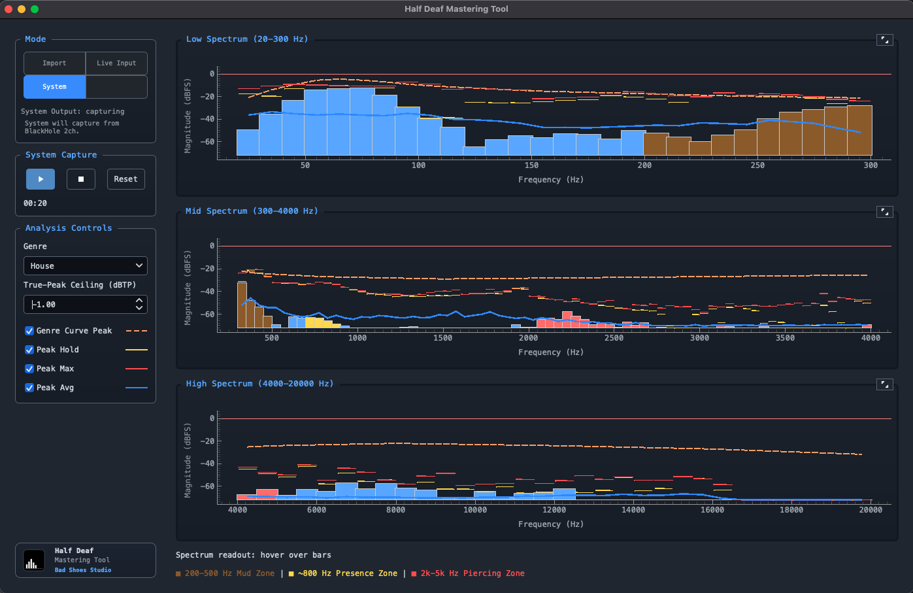

Version 1.0.0 · Half Deaf Master Tool
Objective mastering guidance
Half Deaf Mastering Tool is a desktop assistant for analyzing loudness, dynamics, clipping risk, stereo image, and low-end balance while you make mastering decisions.

Core Features
- Audio and video track loading with playback, seek, and transport controls.
- Spectrum analyzer and spectrogram views for rapid frequency diagnostics.
- LUFS, sample peak, true peak, clipping warnings, and stereo phase/correlation checks.
- Low-end coaching focused on Sub, Bass, and Low-mid safety and translation.
- Reference-track A/B workflow with level matching support.
- System output monitoring mode via loopback-capable input devices.
Support
Support is best-effort through GitHub Issues. Use the repository for bug reports, feature requests, and release notes.
System Requirements
Minimum
- Release installers: macOS 11+ or Windows 10/11 (64-bit).
- Running from source: Python 3.11+.
- ffmpeg on PATH is required for video files and fallback decoding of some audio files.
- Release installers do not bundle ffmpeg.
Recommended
- Apple Silicon Mac or current Windows 11 x64 hardware.
- Reliable audio interface and monitoring path for critical listening.
- Latest official release build from GitHub Releases.
Install
Download platform builds from the release page. For development workflows, run from source with Python 3.11+ and ffmpeg available on PATH.
Legal and Privacy
Half Deaf Mastering Tool is distributed under the MIT License and provided as is, without warranty of any kind.
This app analyzes local audio data and can influence engineering decisions. You are responsible for validating gain staging, monitoring levels, and final masters before release.
For bug reports and release issues, use GitHub Issues. For suspected security issues, email spatek01@att.net, follow SECURITY.md, and avoid public disclosure first.
The desktop app does not include telemetry or a cloud service. Project settings remain local unless you choose to share them.